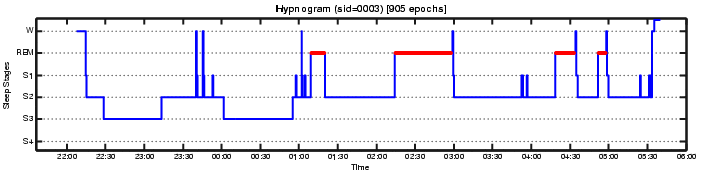

Discovery of Sleep Types based on Stage Composition of Sleep
(Khasawneh, Alvarez, Ruiz, Misra, and Moonis.
"Discovery of sleep composition types using expectation-maximization",
Proc. IEEE CBMS 2010, Oct. 2010.)
Summary
We have available detailed physiological time series recordings
and corresponding sequences of sleep stages determined by human
experts, for sleep studies performed on several hundreds of patients
in the Sleep Clinic at Day Kimball Hospital in Putnam, CT. All data
has been completely anonymized prior to analysis.
Using unsupervised clustering, we establish that these sleep recordings
can be grouped naturally into a small number of subgroups based on
intrinsic properties of the staged sleep signals. Health-related
variables such as age, weight, and smoking habit, differ significantly
among these "sleep types", suggesting that the clusters found
represent medically meaningful entities that may be useful in
future sleep research.
Data Preprocessing
Starting from polysomnographic (PSG) recordings that include
electroencephalogram (EEG), electrocardiogram (ECG), electrooculogram (EOG),
and electromyogram (EMG) time series data, technicians at the sleep clinic
determine a sequence of sleep stage labels known as a hypnogram, an example
of which is shown below.

A feature vector is then extracted from each staged sleep recording,
consisting of the values of the following seven summary variables:
- total sleep time
- sleep efficiency, that is, the fraction of time in bed spent asleep
- fraction of sleep period time in sleep stage 1
- fraction of sleep period time in sleep stage 2
- fraction of sleep period time in slow wave sleep (SWS)
- fraction of sleep period time in Rapid Eye Movement (REM) sleep
- fraction of sleep period time in Rapid Eye Movement (REM) sleep
- fraction of sleep period time spent awake
Some of the terms involved in defining the summary variables are illustrated
below.
Clustering
The seven-dimensional feature vectors described above were analyzed using
unsupervised clustering.
Expectation-maximization (EM) clustering for maximum likelihood estimation
of a mixture of Gaussians was compared with k-means and hierarchical
agglomerative clustering. The number of clusters, k, was specified in
advance, as one of the values k=3,4,5. Clustering results were qualitatively
similar for the three clustering algorithms, with maximal cluster separation
for EM, and hence EM was selected as the clustering algorithm for the results
discussed in our paper (Khasawneh, Alvarez, Ruiz, Misra, and Moonis, 2010).
Remarkable stability of the clustering results was observed when repeatedly
seeding the EM procedure with different randomly selected starting values
for the Gaussian mixture parameters. Good separation among clusters was
obtained, as illustrated by the Multi-Dimensional Scaling (MDS) visualization
below, which displays the results for the case of four clusters using a
two-dimensional projection that minimizes distortion of inter-point distances.
Sleep Composition types
The clusters found by EM in the seven-dimensional feature space were found
to be well separated in two dimensions. This is suggested by the above MDS
visualization, in which, however, the axes involve combinations of all seven
summary variables. It was found that two of the seven variables used for
clustering already provide good discrimination among clusters, specifically
sleep efficiency (or total sleep time as a surrogate), and fraction of sleep
period time in slow wave sleep (SWS). The clusters found are depicted in the
space spanned by these two variables below, for 3, 4, and 5 clusters.
A hierarchical structure is observed in the family of clusterings for
different numbers of clusters, k. The cluster consisting of sleep recordings
with the lowest sleep efficiency (the instances colored green toward the
left side in each of the three graphs within the preceding figure) is
stable as the number of clusters increases, while the cluster consisting
of instances with the highest sleep efficiency (colored red in the case k=3),
subdivides into two clusters (red and cyan) when k=4. An additional subdivision
is observed in the transition from k=4 to k=5.
The mean values of several health-related variables are found to differ
significantly among these clusters, suggesting that the clusters represent
medically meaningful entities and are worthy of further study.